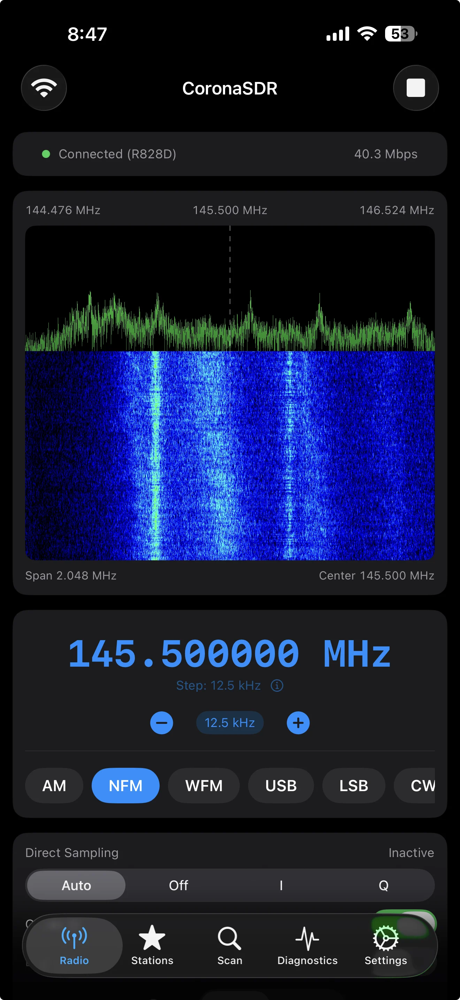

Your RTL-SDR dongle,
now on iPhone.
Listen to FM broadcasts, aircraft, marine, amateur radio, and weather stations. Connect to any rtl_tcp server and get a GPU-accelerated spectrum analyzer with crystal-clear audio in your pocket.

Works with any rtl_tcp server — Raspberry Pi, macOS, Linux

A real SDR client, not a toy
Six demodulation modes, GPU-accelerated visuals, and pro-grade controls — designed for iOS from the ground up.
Live Spectrum & Waterfall
Real-time FFT spectrum analyzer and waterfall display rendered with Metal GPU acceleration. Spot transmissions at a glance and drag to tune directly on the display.
6 Demodulation Modes
AM, NFM, WFM, USB, LSB, CW — with squelch, FM de-emphasis (50/75 µs), configurable audio filters, and BFO tuning for SSB.
Scanner
List scan and range scan with configurable dwell, hold, and skip via squelch. Find active frequencies automatically.
Station Memory
Save favorites with custom tags. Import and export your frequency lists via CSV or TSV — share between devices effortlessly.
Background Audio
Keep listening while you use other apps. Full lock screen and Now Playing integration — control playback without opening the app.
Full SDR Control
Gain (auto/manual), PPM correction, direct sampling, offset tuning, bias-tee, and 4 performance profiles from Ultra Low to High sample rate.
Deep Link Automation
Control CoronaSDR from Shortcuts, Safari, or other apps using the coronasdr:// URL scheme.
Live Diagnostics
Monitor throughput (Mbps), IQ/audio buffer health, overrun counters, and network quality indicators in real time.
Up and running in 3 steps
Plug in your RTL-SDR dongle, start the server, and connect from your iPhone. No cloud account, no subscription.
Start rtl_tcp on your server
Raspberry Pi, Mac, or any Linux box with an RTL-SDR plugged in:
rtl_tcp -a 0.0.0.0
Open CoronaSDR
Enter the server's IP and port, then tap connect. The built-in connection test verifies everything works.
Pick a mode and tune in
Try WFM at 100 MHz for your local FM station, or AM at 118–137 MHz for aircraft.
Not sure where to start?
Tune to these popular frequencies and discover what's on the air around you.
Frequencies vary by region. Check your local band plans for amateur radio and public safety allocations.
Support CoronaSDR
CoronaSDR is free with no ads and no subscriptions. If it's useful to you, consider buying me a coffee to keep development going.